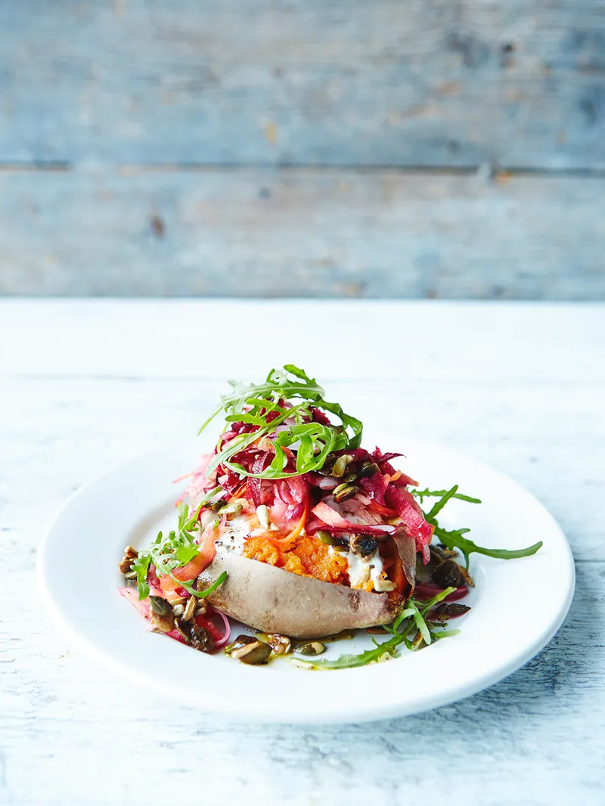

Baked sweet potatoes

Description
"Super sweet potatoes are a great substitute for white potatoes in this colourful dish, as they give us an extra health boost. They're a non-starchy carb, meaning they count towards our 5-a-day, plus give us loads of nutrients including the mighty vitamin C."
Ingredients
- 2 sweet potatoes , (350g each)
- olive oil
- ½ a lemon
- 80 g fat-free natural yoghurt
- 1 small pinch of ground turmeric
- 1 small pinch of ground cumin
- 1 carrot
- 6 radishes
- 1 raw beetroot
- 1 small red onion
- 1 eating apple
- extra virgin olive oil
- 2 tablespoons pumpkin and sunflower seeds
- maple syrup , (optional)
- 35g rocket
Steps
- Preheat the oven to 180ºC/350ºF/gas 4.
- Scrub the sweet potatoes, pat dry, then rub with a little olive oil and a pinch of sea salt and black pepper. Roast on a baking tray for about 40 minutes, or until cooked through (or prick with a fork and cook in the microwave for 10 to 12 minutes, or until tender).
- Finely grate the lemon zest into a small bowl and mix in the yoghurt, turmeric and cumin. Leave at room temperature until needed.
- Scrub the carrot, radishes and beetroot, peel the onion and core the apple. In this order, carefully push the carrot, radishes, red onion, apple and beetroot through the grating blade of your food processor, or coarsely grate by hand, then tip into a bowl.
- Mix the veg with the lemon juice, 1 tablespoon of extra virgin olive oil and a good pinch of salt and pepper.
- A few minutes before your potatoes are ready, toast the seeds in a small frying pan on a medium heat for 2 minutes, or until smelling fantastic. At this point, add 1 tablespoon of maple syrup (if using) and let it bubble until it starts to thicken, then take off the heat. Carefully pour onto a sheet of greaseproof paper, leave to cool and don’t touch!
- Cut a cross in the top of your cooked potatoes and gently break them open with a fork, mashing a little of the inside as you go.
- Spoon over a good dollop of the spiced yoghurt, followed by the juicy grated salad, and the seeds. Serve with the rocket scattered over.